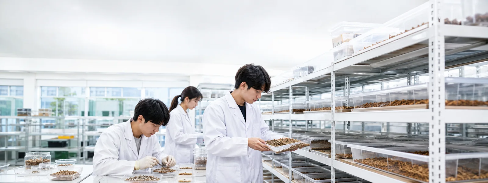
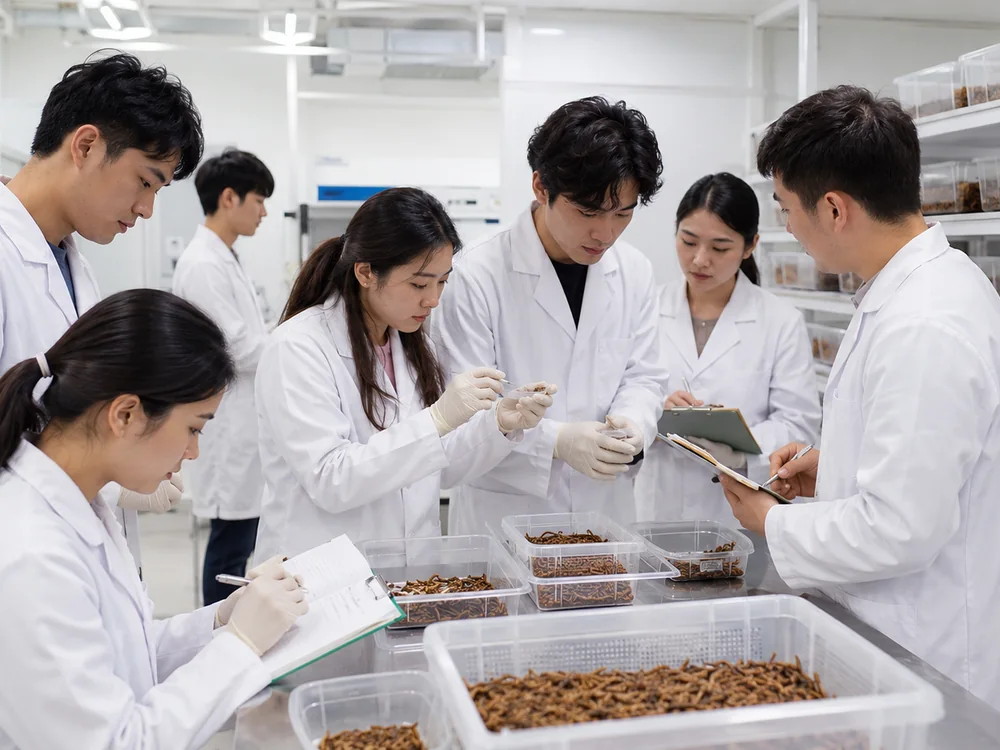
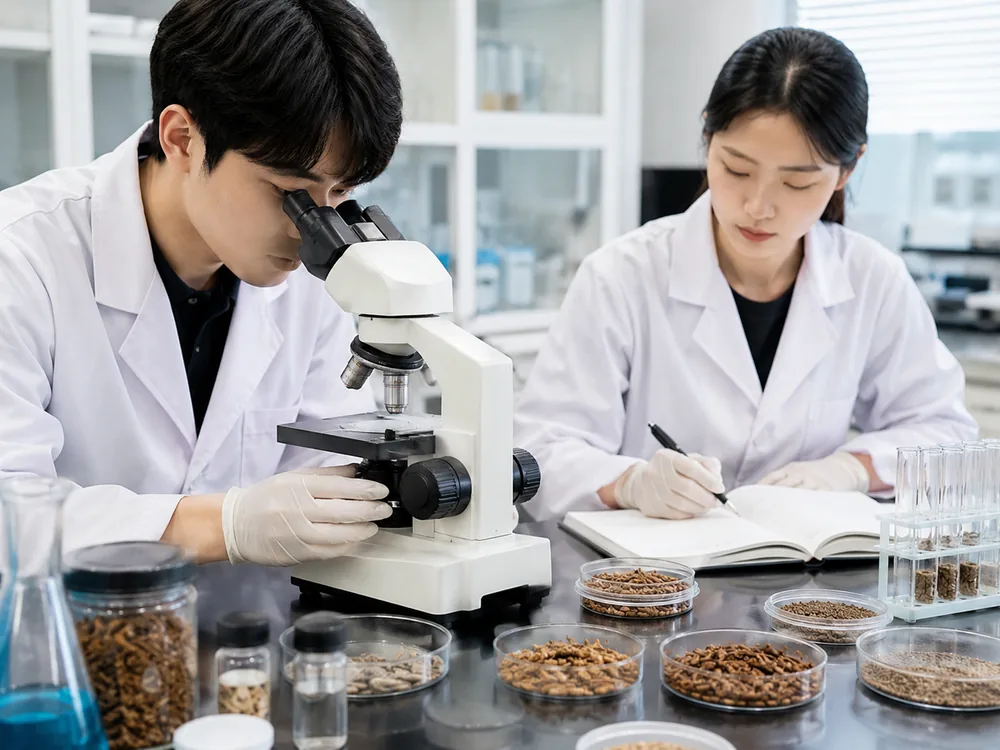

Giới thiệu chuyên ngành
Chuyên ngành đào tạo chuyên gia về tài nguyên lương thực tương lai, dẫn đầu ngành smart farm và ngành côn trùng.
Chuyên ngành Tài nguyên lương thực thông minh đào tạo nguồn nhân lực chuyên môn về tài nguyên lương thực thông minh (smart farm trong nhà và ngoài trời) nhằm ứng phó với biến đổi khí hậu bất thường trên toàn cầu, cùng nguồn nhân lực chuyên môn cho ngành smart farm · ngành côn trùng đang nổi lên như một ngành công nghiệp mới. Lấy phòng thực hành smart farm factory ngành côn trùng làm trung tâm, chuyên ngành triển khai đào tạo tiên phong tập trung, và đào tạo nhân lực thực tiễn theo chuẩn NCS gắn với dự án đặc khu giáo dục · smart farm cho thuê của cộng đồng địa phương (huyện 영암).
Là khoa mới thành lập năm 2024, chuyên ngành đã được chọn làm cơ quan vận hành chương trình bồi dưỡng chuyên môn lĩnh vực đặc thù cho giáo viên tiểu học · trung học (tháng 3/2024), và cũng vận hành khóa chứng chỉ Tư vấn viên côn trùng (곤충컨설턴트) dành cho người học trưởng thành.
Chứng chỉ có thể đạt được
Hỗ trợ đạt được chứng chỉ quốc gia · dân lập.
- Chứng chỉ quốc gia Chuyên viên vệ sinh (위생사, giấy phép hành nghề) · Chuyên viên nông nghiệp trị liệu (치유농업사)
- Chứng chỉ dân lập Tư vấn viên côn trùng (곤충컨설턴트) · Thuyết minh viên côn trùng (곤충해설사) · Đầu bếp côn trùng ăn được (식용곤충조리사) · Healthy Food Master (헬씨푸드마스터) — lĩnh vực chế biến món ăn từ côn trùng ăn được
Định hướng nghề nghiệp
Smart farm · Bio
Smart farm & factory · công ty chuyên về smart farm · công ty chuyên về bio & healthy · doanh nghiệp khởi nghiệp thịt thay thế
Công · Nghiên cứu
Công chức quốc gia · địa phương lĩnh vực chuyên ngành / nghiên cứu viên · cơ quan nông nghiệp trị liệu
Khởi nghiệp ngành côn trùng
Khởi nghiệp côn trùng ăn được và côn trùng làm thức ăn chăn nuôi (CEO) · công ty liên quan đến côn trùng ăn được · làm thức ăn chăn nuôi
Chăm sóc · Giáo dục
Trung tâm chăm sóc thú cưng · công ty phòng dịch · giáo viên ngoại khóa
Chương trình đào tạo
Các môn học chính năm 1 ~ năm 2.
| Năm học | Học kỳ 1 | Học kỳ 2 |
|---|---|---|
| Năm 1 | Giáo dục đại cương và nhân cách · Nhập môn sinh học · Nhập môn tài nguyên lương thực thông minh · Nhập môn ngành côn trùng · Nuôi côn trùng ăn được và thực hành Ⅰ · Local creator và khám phá tài nguyên địa phương · Côn trùng học đại cương và thực hành | Chế biến côn trùng ăn được và thực hành · Chuyên ngành và phát triển bản thân · Thực tập hiện trường · Phúc lợi động vật · Côn trùng trị liệu và thực hành · Sinh lý học côn trùng · Vệ sinh thực phẩm và HACCP |
| Năm 2 | Hóa sinh côn trùng · Côn trùng cảnh phục vụ học tập · Ngành công nghiệp smart bio · Nuôi côn trùng làm thức ăn chăn nuôi và thực hành · Nuôi côn trùng ăn được và thực hành Ⅱ · Côn trùng thiên địch và thụ phấn · Côn trùng y tế và thực hành | Quản lý smart farm · Seminar ngành côn trùng · Chế biến ngành côn trùng và thực hành · Quản trị ESG ngành côn trùng · Bệnh lý học côn trùng |
Đội ngũ giảng viên
| Họ tên | Môn phụ trách | Liên hệ |
|---|---|---|
| 황두선 Chủ nhiệm chuyên ngành | Nhập môn ngành côn trùng · Côn trùng học đại cương và thực hành · Phúc lợi động vật · HACCP · Nuôi côn trùng ăn được và thực hành Ⅰ·Ⅱ · Côn trùng trị liệu và thực hành · Côn trùng thiên địch và thụ phấn | 061-470-1776 dshwang@duh.ac.kr |
| 김재근 Giáo sư | Nhập môn sinh học · Nhập môn tài nguyên lương thực thông minh · Local creator · Sinh lý học côn trùng · Hóa sinh côn trùng · Ngành công nghiệp smart bio · Chế biến côn trùng ăn được và thực hành · Côn trùng cảnh phục vụ học tập | 061-470-1718 jkkim@duh.ac.kr |
Lịch sử phát triển
- 2023.09 ~ 2024.02 Khảo sát tính khả thi mở khoa · mời gọi giảng viên chuyên ngành · xây dựng kế hoạch phát triển và chương trình đào tạo · tuyển sinh tân sinh viên khóa 2024 · chuẩn bị trang thiết bị phòng thí nghiệm · thực hành
- 2024.03.02 Hoàn tất tuyển sinh 15 tân sinh viên khóa 1 (100%) và lễ nhập học
- 2024.03.14 Được chọn làm cơ quan bồi dưỡng chuyên môn lĩnh vực đặc thù cho giáo viên tiểu học · trung học
Hình ảnh chuyên ngành


Mọi thắc mắc về nhập học chuyên ngành Tài nguyên lương thực thông minh dành cho du học sinh nước ngoài, vui lòng liên hệ Trung tâm Giao lưu Quốc tế 061-470-1700 (ARS số 7) hoặc xem Hướng dẫn tuyển sinh & đăng ký.